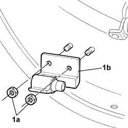

7005A24 front side door hinges (bolted) - r r with door removed
- Path
- Procedures > 70 FITTINGS > 7005 passenger compartment front side doors > 7005A FRONT DOOR ASSEMBLY > 7005A24 front side door hinges (bolted) - r r with door removed
- Kind
- repair procedure (removal / refitting; the operation number is the code)
- Applies to
- all engines; all production periods
- Interactive page
- https://sloeber94.github.io/elrnDB-lThss/en/#/79815
Applies to: all engines; all production periods
 Removing
Removing
 Refitting
Refitting1. Undo the fixing nuts (1a) and remove the door hinge (1b).

Applies to: all engines; all production periods
Refitting
Removing- Position the door hinge and tighten the fixing nuts to torque.
 | Value - daNm | Fastening | Component | Ø |
|---|---|---|---|---|
. | (door) 3.6 | Nut | FRONT SIDE DOOR HINGES | M8 |